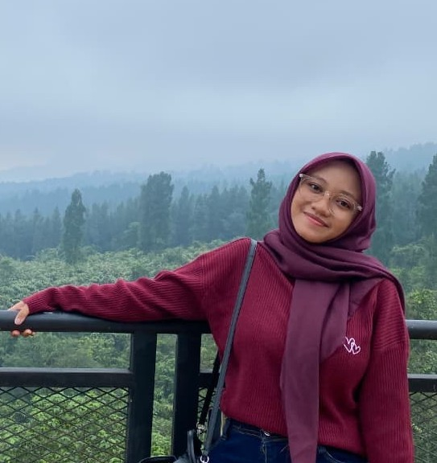

🌊 by wawa imut 🌸
Pegunungan punya bahasa sendiri. aku nggak paham, tapi setiap kali sampai di atas, rasanya kamu lagi bisik-bisik di telingaku: "lihat, indah kan?"
📨 buka suratPantai tahu cara membuatku rindu. angin laut berbisik namamu, garam di bibir terasa kayak sisa senyummu. sore di sini selalu punya warna favoritmu.
💙 baca suratLangit tahu namamu. dia tulis pakai warna-warna yang nggak bisa kamu lihat di tempat lain. senja cuma alasan biar aku berhenti dan mikirin kamu lagi..
⭐ buka surat